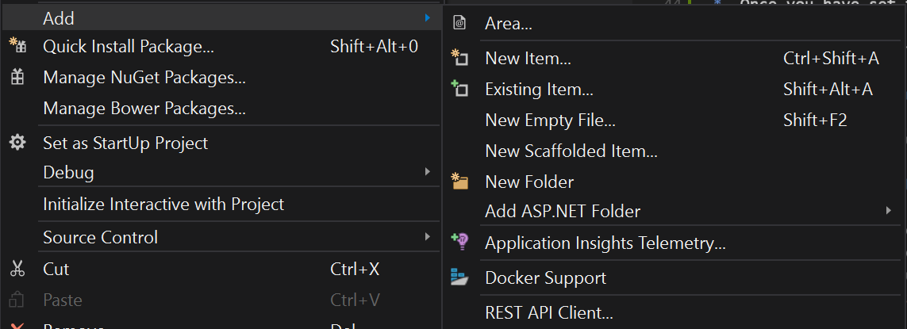
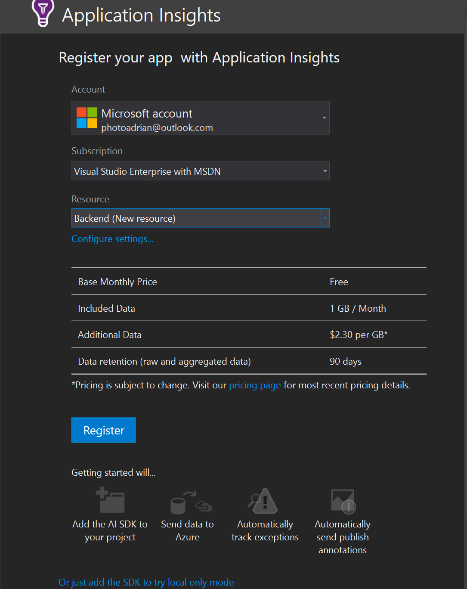

Monitoring and Troubleshooting¶
The last two topics are joined together - monitoring and troubleshooting. There are many reasons for monitoring:
- To gain marketing information into your userbase.
- To detect potential security threats.
- To detect problems in your code.
This latter reason is the reason most developers want to monitor their mobile app. However, there is much to be gained from monitoring your mobile app for marketing purposes, and security should be a top-of-mind issue for everyone with an app that others use. Security is generally monitored at the mobile backend. Marketing information is gleaned from monitoring the usage of the mobile client, and problems can occur anywhere in your code base.
You should always monitor as close to your mobile backend as possible. If you monitor your mobile backend from another provider (for example), you will be paying for network charges needlessly. Except in rare cases (such as the recently advertised Amazon outages), the cloud provider will keep the cloud operating without any involvement from you. Even in those cases where there is an outage at the cloud provider, you will not be able to prevent the outage simply by having monitoring elsewhere.
Since the preferred hosting platform for Azure Mobile Apps is Azure App Service, this means using the analytics platform provided by Azure. This consists of two parts:
- Application Insights for monitoring and troubleshooting the mobile backend.
- Visual Studio Mobile Center for monitoring and troubleshooting the mobile client.
Monitoring your Backend¶
There is a lot of monitoring built into Azure App Service. For these tools, you don't have to do anything. They are always available. However, there are certain pieces of information that are not going to be available. For instance, you will not be able to correlate uploads with users since Azure App Service really doesn't know anything about users. For this reason, it's a good idea to integrate Application Insights into your mobile backend. This is a two-step process:
- Create an Application Insights instance in your Azure resource group.
- Add Application Insights to your mobile backend project.
There is more to Application Insights than the basics we are going to cover here, including custom events, filtering, and integration with other platforms. Application Insights is a powerful service and we will only be able to scratch the surface of it.
Automate Application Insights creation with ARM
Just like all other Azure resources, you can create an Application Insights with an automated deployment via an ARM template.
Create an Application Insights Instance¶
Start by opening the Azure portal, then:
- Open your resource group.
- Click Add.
- Search for then click Application Insights.
- Click Create.
- Enter a name for the resource. Pick ASP.NET web application for the application type.
- Select the nearest location to your mobile backend.
Application Insights isn't everywhere
Application Insights can only be placed in larger regions where storage and compute capacity is large. That means your Application Insights will probably not be in the same location as your mobile backend.
- Once you have set the required configuration, click Create.
There won't be any data until you have connected your mobile backend to the Application Insights resource.
Add Application Insights to your Mobile Backend¶
Let's continue with our cloud backend that we developed for Chapter 8. Open your solution in Visual Studio, right-click the project and select Add -> Application Insights Telemetry....

Once added, the configuration process will start. Click Start Free.

If you need to, select and authenticate to the right Azure account and select your subscription. In the Resource drop-down, select the Application Insights resource you just created. Then click Register. This will add the appropriate NuGet packages to your project and configure most of what is required in the source code. Once the process is complete, click Finish.
You can optionally enable trace collection. This allows you to search the output from System.Diagnostics, enabling you to capture even more information. Diagnostic data is generally verbose and slows the service down. The free tier of Application Insights is limited to 1Gb/month, so this step is optional.
Your last remaining step is to publish your site to Azure App Service, which we have done many times during the course of the book.
Viewing Application Insights Data¶
The Application Insights data is available through the Azure portal or within Visual Studio. Before we go any further, generate some Application Insights data by using your mobile app. Once done, you can review the Application Insights data by right-clicking on your backend project and choosing Application Insights -> Open Application Insights Portal. The same page is available by clicking the Application Insights resource in your resource group.
Application Insights is constantly changing, so take some time to learn about the metrics and reports you can view using the portal.
Monitoring your Mobile Clients¶
Monitoring your mobile client is important to gather usage and marketing data about your users. You can also find out how your users are actually using your mobile app. This allows you to target additional improvements in areas that people find useful and perhaps remove or improve areas that are less used. To integrate monitoring, first create a Visual Studio Mobile Center app as we described in the Testing section.
- Return to the Visual Studio Mobile Center and select your app.
- If you were at another beacon, click Getting Started.
- Click Manage app.
- Copy the App secret somewhere accessible - we will need it in a few moments.
- Open the mobile app project in Visual Studio 2017 or Visual Studio for Mac.
- Right-click the solution and select Manage NuGet Packages for Solution....
- Click Browse, then search for Microsoft.Azure.Mobile.Analytics.
- Install the
Microsoft.Azure.Mobile.Analyticspackage into the Android and iOS projects.
Once the package(s) are installed, open App.cs in the shared project. Add the MobileCenter.Start line at the start of the constructor:
using Microsoft.Azure.Mobile;
using Microsoft.Azure.Mobile.Analytics;
using TaskList.Abstractions;
using TaskList.Services;
using Xamarin.Forms;
namespace TaskList
{
public class App : Application
{
public static ICloudService CloudService { get; set; }
public App()
{
MobileCenter.Start("android=609b2734-0353-4e71-a654-fedd9df1632a", typeof(Analytics));
#if USE_MOCK_SERVICES
CloudService = new MockCloudService();
#else
CloudService = new AzureCloudService();
#endif
MainPage = new NavigationPage(new Pages.EntryPage());
}
}
}
When you start your app, the analytics service will send a session start message to Visual Studio Mobile Center, allowing you to get basic demographics about your mobile app usage, such as how many distinct users you have, where they are located, and what device(s) they are using. To get this level of information, visit the Analytics page in the Visual Studio Mobile Center portal.
You can get better analytics by defining custom events. An event is a custom interaction with the content in your app that allows you to better understand your user's behavior. For example, you may want to understand what sort of things your users are uploading - are they uploading from the camera or picking a picture? You will not be able to get this information from the server. The server will only be able to tell that the user uploaded a picture. To use custom events, you can use the trackEvent() method, like this:
// at the top of the file:
// using Microsoft.Azure.Mobile.Analytics
Analytics.TrackEvent("FILE_UPLOAD", new Dictionary<string, string> {
{ "Source", "Camera" },
{ "FileName", "pic1.jpg" }
});
To analyze custom events, go to the Events page in the Visual Studio Mobile Center portal. The events are attached to a session so you can report on the number of distinct users using a camera for upload, for example. Custom Events are limited by your imagination, but they do have a cost associated with them - each event does cost a small amount of bandwidth to the user.
Other Analytics Limits
You can only produce 200 custom event types per app. The "FILE_UPLOAD" is an event type. There is a total maximum of 256 characters per event type. Each property name and value must be less than 64 characters.
Crash Reporting¶
Once your application is out in the wild, whether it be with your beta testers, your employees or the general public via a public app store, you want to ensure it is working. You can do all the testing available to you and there will still be some combination of factors that may cause your application to crash. Your users will most likely just delete your application at that point, so it's a good idea to collect the cause of the crash before they do that.
To integrate crash reporting, add the Mobile Center SDK to your project, then add a single line of code to your application. We've already created a Visual Studio Mobile Center app for beta distribution (which we covered above), so we'll use the same application.
- Return to the Visual Studio Mobile Center and select your app.
- If you were at another beacon, click Getting Started.
- Click Manage app.
- Copy the App secret somewhere accessible - we will need it in a few moments.
- Open the mobile app project in Visual Studio 2017 or Visual Studio for Mac.
- Right-click the solution and select Manage NuGet Packages for Solution....
- Click Browse, then search for Microsoft.Azure.Mobile.Crashes.
- Install the
Microsoft.Azure.Mobile.Crashespackage into the Android and iOS projects.
If you have both an iOS and Android app, make note of BOTH app secrets - one from each app within Mobile Center.
Once the package(s) are installed, open App.cs in the shared project. Add the MobileCenter.Start line at the start of the constructor:
using Microsoft.Azure.Mobile;
using Microsoft.Azure.Mobile.Analytics;
using Microsoft.Azure.Mobile.Crashes;
using TaskList.Abstractions;
using TaskList.Services;
using Xamarin.Forms;
namespace TaskList
{
public class App : Application
{
public static ICloudService CloudService { get; set; }
public App()
{
MobileCenter.Start("android=609b2734-0353-4e71-a654-fedd9df1632a",
typeof(Analytics), typeof(Crashes));
#if USE_MOCK_SERVICES
CloudService = new MockCloudService();
#else
CloudService = new AzureCloudService();
#endif
MainPage = new NavigationPage(new Pages.EntryPage());
}
}
}
I am combining analytics with crash reporting here. You can choose to integrate analytics, crash reporting or both by adjusting the MobileCenter.Start() call. Replace the app secret placeholders with your app secrets.
Eventually, your app is going to crash. When this happens, the crash will appear in the Crashes service within Mobile Center, allowing you to see what type of mobile device was being used, the version of the app being run and the stack trace of the app at that point. Visual Studio Mobile Center also groups like crashes together so that you can see commonality between crashes and better target your bug fixing.
Best Practices¶
There is, thankfully, a short list of best practices to close out the book:
- Integrate Analytics and Crash Reporting in every mobile app.
- Integrate Application Insights into your mobile backend.
- Investigate every single crash reported by your mobile app.
- Use UI Testing to re-create the crash.
- Use a bug tracking system such as the one integrated into GitHub or Visual Studio Team Services.
- Investigate every 500 Internal Server Error produced by your mobile backend. It means your server crashed.
And in closing¶
Thank you for taking the time to read this book. I hope you found it informative.
Now go and make awesome mobile apps!